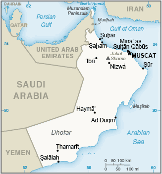
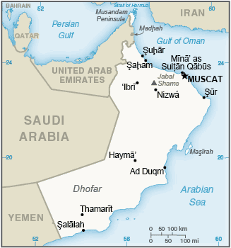

-
Introduction :: Oman
-
Background:
The inhabitants of the area of Oman have long prospered from Indian Ocean trade. In the late 18th century, the nascent sultanate in Muscat signed the first in a series of friendship treaties with Britain. Over time, Oman's dependence on British political and military advisors increased, although the sultanate never became a British colony. In 1970, QABOOS bin Said Al-Said overthrew his father, and has since ruled as sultan, but he has not designated a successor. His extensive modernization program has opened the country to the outside world, while preserving the longstanding close ties with the UK and US. Oman's moderate, independent foreign policy has sought to maintain good relations with its neighbors and to avoid external entanglements.
Inspired by the popular uprisings that swept the Middle East and North Africa beginning in January 2011, some Omanis staged demonstrations, calling for more jobs and economic benefits and an end to corruption. In response to those protester demands, QABOOS in 2011 pledged to implement economic and political reforms, such as granting legislative and regulatory powers to the Majlis al-Shura and increasing unemployment benefits. Additionally, in August 2012, the Sultan announced a royal directive mandating the speedy implementation of a national job creation plan for thousands of public and private sector Omani jobs. This initiative took on new urgency in December 2017, when QABOOS instructed the government to create 25,000 new jobs in the public and private sectors for Omanis. As part of the government's efforts to decentralize authority and allow greater citizen participation in local governance, Oman successfully conducted its first municipal council elections in December 2012. Announced by the Sultan in 2011, the municipal councils have the power to advise the Royal Court on the needs of local districts across Oman's 11 governorates. The Sultan returned to Oman in March 2015 after eight months in Germany, where he received medical treatment.
-
Geography :: Oman
-
Location:Middle East, bordering the Arabian Sea, Gulf of Oman, and Persian Gulf, between Yemen and the UAEGeographic coordinates:21 00 N, 57 00 EMap references:Middle EastArea:total: 309,500 sq kmland: 309,500 sq kmwater: 0 sq kmcountry comparison to the world: 72Area - comparative:twice the size of Georgia; slightly smaller than KansasLand boundaries:total: 1,561 kmborder countries (3): Saudi Arabia 658 km, UAE 609 km, Yemen 294 kmCoastline:2,092 kmMaritime claims:territorial sea: 12 nmexclusive economic zone: 200 nmcontiguous zone: 24 nmClimate:dry desert; hot, humid along coast; hot, dry interior; strong southwest summer monsoon (May to September) in far southTerrain:central desert plain, rugged mountains in north and southElevation:mean elevation: 310 melevation extremes: 0 m lowest point: Arabian Sea3004 highest point: Jabal ShamsNatural resources:petroleum, copper, asbestos, some marble, limestone, chromium, gypsum, natural gasLand use:agricultural land: 4.7% (2011 est.)arable land: 0.1% (2011 est.) / permanent crops: 0.1% (2011 est.) / permanent pasture: 4.5% (2011 est.)forest: 0% (2011 est.)other: 95.3% (2011 est.)Irrigated land:590 sq km (2012)Population distribution:the vast majority of the population is located in and around the Al Hagar Mountains in the north of the country; another smaller cluster is found around the city of Salalah in the far south; most of the country remains sparsely poplulatedNatural hazards:summer winds often raise large sandstorms and dust storms in interior; periodic droughtsEnvironment - current issues:limited natural freshwater resources; high levels of soil and water salinity in the coastal plains; beach pollution from oil spills; industrial effluents seeping into the water tables and aquifers; desertificaiton due to high winds driving desert sand into arable landsEnvironment - international agreements:party to: Biodiversity, Climate Change, Climate Change-Kyoto Protocol, Desertification, Hazardous Wastes, Law of the Sea, Marine Dumping, Ozone Layer Protection, Ship Pollution, Whalingsigned, but not ratified: none of the selected agreementsGeography - note:consists of Oman proper and two northern exclaves, Musandam and Al Madhah; the former is a peninsula that occupies a strategic location adjacent to the Strait of Hormuz, a vital transit point for world crude oil
-
People and Society :: Oman
-
Population:3,494,116 (July 2017 est.) (July 2018 est.)
note: immigrants make up approximately 45% of the total population (2017)
country comparison to the world: 131Nationality:noun: Omani(s)adjective: OmaniEthnic groups:Arab, Baluchi, South Asian (Indian, Pakistani, Sri Lankan, Bangladeshi), AfricanLanguages:Arabic (official), English, Baluchi, Urdu, Indian dialectsReligions:Muslim 85.9%, Christian 6.5%, Hindu 5.5%, Buddhist 0.8%, Jewish <0.1%, other 1%, unaffiliated 0.2% (2010 est.)note: Omani citizens represent approximately 60% of the population and are overwhelming Muslim (Ibadhi and Sunni sects each constitute about 45% and Shia about 5%); Christians, Hindus, and Buddhists accounting for roughly 5% of Omani citizens
Age structure:0-14 years: 30.1% (male 539,202 /female 512,416)15-24 years: 18.26% (male 334,784 /female 303,172)25-54 years: 44.15% (male 886,080 /female 656,734)55-64 years: 3.94% (male 73,233 /female 64,450)65 years and over: 3.55% (male 60,354 /female 63,691) (2018 est.)population pyramid: The World Factbook Field Image ModalMiddle East :: Oman Print
The World Factbook Field Image ModalMiddle East :: Oman Print Image DescriptionThis is the population pyramid for Oman. A population pyramid illustrates the age and sex structure of a country's population and may provide insights about political and social stability, as well as economic development. The population is distributed along the horizontal axis, with males shown on the left and females on the right. The male and female populations are broken down into 5-year age groups represented as horizontal bars along the vertical axis, with the youngest age groups at the bottom and the oldest at the top. The shape of the population pyramid gradually evolves over time based on fertility, mortality, and international migration trends.
Image DescriptionThis is the population pyramid for Oman. A population pyramid illustrates the age and sex structure of a country's population and may provide insights about political and social stability, as well as economic development. The population is distributed along the horizontal axis, with males shown on the left and females on the right. The male and female populations are broken down into 5-year age groups represented as horizontal bars along the vertical axis, with the youngest age groups at the bottom and the oldest at the top. The shape of the population pyramid gradually evolves over time based on fertility, mortality, and international migration trends.
For additional information, please see the entry for Population pyramid on the Definitions and Notes page under the References tab.Dependency ratios:total dependency ratio: 32.4 (2015 est.)youth dependency ratio: 29.4 (2015 est.)elderly dependency ratio: 3.1 (2015 est.)potential support ratio: 32.6 (2015 est.)Median age:total: 25.8 yearsmale: 26.8 yearsfemale: 24.5 years (2018 est.)country comparison to the world: 154Population growth rate:2% (2018 est.)country comparison to the world: 47Birth rate:23.7 births/1,000 population (2018 est.)country comparison to the world: 54Death rate:3.3 deaths/1,000 population (2018 est.)country comparison to the world: 219Net migration rate:-0.4 migrant(s)/1,000 population (2017 est.)country comparison to the world: 120Population distribution:the vast majority of the population is located in and around the Al Hagar Mountains in the north of the country; another smaller cluster is found around the city of Salalah in the far south; most of the country remains sparsely poplulatedUrbanization:urban population: 84.5% of total population (2018)rate of urbanization: 5.25% annual rate of change (2015-20 est.)Major urban areas - population:1.447 million MUSCAT (capital) (2018)Sex ratio:at birth: 1.05 male(s)/female (2017 est.)0-14 years: 1.05 male(s)/female (2017 est.)15-24 years: 1.1 male(s)/female (2017 est.)25-54 years: 1.38 male(s)/female (2017 est.)55-64 years: 1.14 male(s)/female (2017 est.)65 years and over: 0.99 male(s)/female (2017 est.)total population: 1.19 male(s)/female (2017 est.)Maternal mortality rate:17 deaths/100,000 live births (2015 est.)country comparison to the world: 132Infant mortality rate:total: 12.4 deaths/1,000 live births (2018 est.)male: 12.7 deaths/1,000 live births (2018 est.)female: 12.1 deaths/1,000 live births (2018 est.)country comparison to the world: 109Life expectancy at birth:total population: 75.9 years (2018 est.)male: 73.9 years (2018 est.)female: 78 years (2018 est.)country comparison to the world: 97Total fertility rate:2.8 children born/woman (2018 est.)country comparison to the world: 61Contraceptive prevalence rate:29.7% (2014)Health expenditures:3.6% of GDP (2014)country comparison to the world: 171Physicians density:1.92 physicians/1,000 population (2016)Hospital bed density:1.6 beds/1,000 population (2014)Drinking water source:improved: urban: 95.5% of populationrural: 86.1% of populationtotal: 93.4% of populationunimproved: urban: 4.5% of populationrural: 13.9% of populationtotal: 6.6% of population (2015 est.)Sanitation facility access:improved: urban: 97.3% of population (2015 est.)rural: 94.7% of population (2015 est.)total: 96.7% of population (2015 est.)unimproved: urban: 2.7% of population (2015 est.)rural: 5.3% of population (2015 est.)total: 3.3% of population (2015 est.)HIV/AIDS - adult prevalence rate:NAHIV/AIDS - people living with HIV/AIDS:NAHIV/AIDS - deaths:NAObesity - adult prevalence rate:27% (2016)country comparison to the world: 39Children under the age of 5 years underweight:9.7% (2014)country comparison to the world: 64Education expenditures:6.2% of GDP (2016)country comparison to the world: 32Literacy:definition: age 15 and over can read and write (2015 est.)total population: 93% (2015 est.)male: 96.6% (2015 est.)female: 86% (2015 est.)School life expectancy (primary to tertiary education):total: 14 years (2015)male: 13 years (2015)female: 15 years (2015) -
Government :: Oman
-
Country name:conventional long form: Sultanate of Omanconventional short form: Omanlocal long form: Saltanat Umanlocal short form: Umanformer: Sultanate of Muscat and Omanetymology: the origin of the name is uncertain, but it apparently dates back at least 2,000 years since an "Omana" is mentioned by Pliny the Elder (1st century A.D.) and an "Omanon" by Ptolemy (2nd century A.D.)Government type:absolute monarchyCapital:name: Muscatgeographic coordinates: 23 37 N, 58 35 Etime difference: UTC+4 (9 hours ahead of Washington, DC, during Standard Time)Administrative divisions:11 governorates (muhafazat, singular - muhafaza); Ad Dakhiliyah, Al Buraymi, Al Wusta, Az Zahirah, Janub al Batinah (Al Batinah South), Janub ash Sharqiyah (Ash Sharqiyah South), Masqat (Muscat), Musandam, Shamal al Batinah (Al Batinah North), Shamal ash Sharqiyah (Ash Sharqiyah North), Zufar (Dhofar)Independence:1650 (expulsion of the Portuguese)National holiday:National Day, 18 November; note - coincides with the birthday of Sultan QABOOS, 18 November (1940)Constitution:history: promulgated by royal decree 6 November 1996 (the Basic Law of the Sultanate of Oman serves as the constitution); amended by royal decree in 2011 (2016)amendments: promulgated by the sultan or proposed by the Council of Oman and drafted by a technical committee as stipulated by royal decree and then promulgated through royal decree; amended 2011 (2016)Legal system:mixed legal system of Anglo-Saxon law and Islamic lawInternational law organization participation:has not submitted an ICJ jurisdiction declaration; non-party state to the ICCtCitizenship:citizenship by birth: nocitizenship by descent only: the father must be a citizen of Omandual citizenship recognized: noresidency requirement for naturalization: unknownSuffrage:21 years of age; universal; note - members of the military and security forces by law cannot voteJudicial branch:highest courts: Supreme Court (consists of 5 judges)judge selection and term of office: judges nominated by the 9-member Supreme Judicial Council (chaired by the monarch) and appointed by the monarch; judges appointed for lifesubordinate courts: Courts of Appeal; Administrative Court; Courts of First Instance; sharia courts; magistrates' courts; military courtsExecutive branch:chief of state: Sultan and Prime Minister QABOOS bin Said Al-Said (sultan since 23 July 1970 and prime minister since 23 July 1972); note - the monarch is both chief of state and head of governmenthead of government: Sultan and Prime Minister QABOOS bin Said Al-Said (sultan since 23 July 1970 and prime minister since 23 July 1972)cabinet: Cabinet appointed by the monarchelections/appointments: members of the Ruling Family Council determine a successor from the sultan's extended family; if the Council cannot form a consensus within 3 days of the sultan's death or incapacitation, the Defense Council will relay a predetermined heir as chosen by the sultanLegislative branch:description: bicameral Council of Oman or Majlis Oman consists of:
Council of State or Majlis al-Dawla (85 seats including the chairman; members appointed by the sultan from among former government officials and prominent educators, businessmen, and citizens)
Consultative Council or Majlis al-Shura (85 seats; members directly elected in single- and 2-seat constituencies by simple majority popular vote to serve renewable 4-year terms); note - since political reforms in 2011, legislation from the Consultative Council is submitted to the Council of State for review by the Royal Courtelections: Council of State - last appointments on 7 November 2015 (next - NA)
Consultative Assembly - last held on 25 October 2015 (next to be held in October 2019)election results:
Council of State - composition - men 72, women 13, percent of women 15.3%
Consultative Council percent of vote by party - NA; seats by party - NA (organized political parties in Oman are legally banned); composition men 84, women 1, percent of women 1.2%; note - total Council of Oman percent of women 8.2%Political parties and leaders:none; note - organized political parties are legally banned in Oman, and loyalties tend to form around tribal affiliationsInternational organization participation:ABEDA, AFESD, AMF, CAEU, FAO, G-77, GCC, IAEA, IBRD, ICAO, ICC (NGOs), IDA, IDB, IFAD, IFC, IHO, ILO, IMF, IMO, IMSO, Interpol, IOC, IPU, ISO, ITSO, ITU, LAS, MIGA, NAM, OIC, OPCW, UN, UNCTAD, UNESCO, UNIDO, UNWTO, UPU, WCO, WFTU (NGOs), WHO, WIPO, WMO, WTODiplomatic representation in the US:chief of mission: Ambassador Hunaina bint Sultan bin Ahmad al-MUGHAIRI (since 2 December 2005)chancery: 2535 Belmont Road, NW, Washington, DC 20008telephone: [1] (202) 387-1980FAX: [1] (202) 745-4933Diplomatic representation from the US:chief of mission: Ambassador Marc J. SIEVERS (since 15 December 2016)embassy: Jamait Ad Duwal Al Arabiyya Street, Al Khuwair area, Muscatmailing address: P.O. Box 202, P.C. 115, Madinat Al Sultan Qaboos, Muscattelephone: [968] 24-643-400FAX: [968] 24-643-740Flag description:three horizontal bands of white (top), red, and green of equal width with a broad, vertical, red band on the hoist side; the national emblem (a khanjar dagger in its sheath superimposed on two crossed swords in scabbards) in white is centered near the top of the vertical band; white represents peace and prosperity, red recalls battles against foreign invaders, and green symbolizes the Jebel al Akhdar (Green Mountains) and fertilityNational symbol(s):khanjar dagger superimposed on two crossed swords; national colors: red, white, greenNational anthem:name: "Nashid as-Salaam as-Sultani" (The Sultan's Anthem)lyrics/music: Rashid bin Uzayyiz al KHUSAIDI/James Frederick MILLS, arranged by Bernard EBBINGHAUSnote: adopted 1932; new lyrics written after QABOOS bin Said al Said gained power in 1970; first performed by the band of a British ship as a salute to the Sultan during a 1932 visit to Muscat; the bandmaster of the HMS Hawkins was asked to write a salutation to the Sultan on the occasion of his ship visit
-
Economy :: Oman
-
Economy - overview:
Oman is heavily dependent on oil and gas resources, which can generate between and 68% and 85% of government revenue, depending on fluctuations in commodity prices. In 2016, low global oil prices drove Oman’s budget deficit to $13.8 billion, or approximately 20% of GDP, but the budget deficit is estimated to have reduced to 12% of GDP in 2017 as Oman reduced government subsidies. As of January 2018, Oman has sufficient foreign assets to support its currency’s fixed exchange rates. It is issuing debt to cover its deficit.
Oman is using enhanced oil recovery techniques to boost production, but it has simultaneously pursued a development plan that focuses on diversification, industrialization, and privatization, with the objective of reducing the oil sector's contribution to GDP. The key components of the government's diversification strategy are tourism, shipping and logistics, mining, manufacturing, and aquaculture.
Muscat also has notably focused on creating more Omani jobs to employ the rising number of nationals entering the workforce. However, high social welfare benefits - that had increased in the wake of the 2011 Arab Spring - have made it impossible for the government to balance its budget in light of current oil prices. In response, Omani officials imposed austerity measures on its gasoline and diesel subsidies in 2016. These spending cuts have had only a moderate effect on the government’s budget, which is projected to again face a deficit of $7.8 billion in 2018.
GDP (purchasing power parity):$190.1 billion (2017 est.)$191.9 billion (2016 est.)$182.8 billion (2015 est.)note: data are in 2017 dollars
country comparison to the world: 67GDP (official exchange rate):$70.78 billion (2017 est.) (2017 est.)GDP - real growth rate:-0.9% (2017 est.)5% (2016 est.)4.7% (2015 est.)country comparison to the world: 201GDP - per capita (PPP):$46,000 (2017 est.)$47,900 (2016 est.)$48,400 (2015 est.)note: data are in 2017 dollars
country comparison to the world: 37Gross national saving:16.1% of GDP (2017 est.)10.5% of GDP (2016 est.)14.3% of GDP (2015 est.)country comparison to the world: 127GDP - composition, by end use:household consumption: 36.8% (2017 est.)government consumption: 26.2% (2017 est.)investment in fixed capital: 27.8% (2017 est.)investment in inventories: 3% (2017 est.)exports of goods and services: 51.5% (2017 est.)imports of goods and services: -46.6% (2017 est.)GDP - composition, by sector of origin:agriculture: 1.8% (2017 est.)industry: 46.4% (2017 est.)services: 51.8% (2017 est.)Agriculture - products:dates, limes, bananas, alfalfa, vegetables; camels, cattle; fishIndustries:crude oil production and refining, natural and liquefied natural gas production; construction, cement, copper, steel, chemicals, optic fiberIndustrial production growth rate:-3% (2017 est.)country comparison to the world: 188Labor force:2.255 million (2016 est.)note: about 60% of the labor force is non-national
country comparison to the world: 119Labor force - by occupation:agriculture: 4.7% NAindustry: 49.6% NAservices: 45% NA (2016 est.)Unemployment rate:NA
Population below poverty line:NABudget:revenues: 22.14 billion (2017 est.)expenditures: 31.92 billion (2017 est.)Taxes and other revenues:31.3% (of GDP) (2017 est.)country comparison to the world: 73Budget surplus (+) or deficit (-):-13.8% (of GDP) (2017 est.)country comparison to the world: 216Public debt:46.9% of GDP (2017 est.)32.5% of GDP (2016 est.)note: excludes indebtedness of state-owned enterprises
country comparison to the world: 113Fiscal year:calendar yearInflation rate (consumer prices):1.6% (2017 est.)1.1% (2016 est.)country comparison to the world: 90Central bank discount rate:2% (31 December 2010)0.05% (31 December 2009)country comparison to the world: 119Commercial bank prime lending rate:5.2% (31 December 2017 est.)5.08% (31 December 2016 est.)country comparison to the world: 148Stock of narrow money:$12.85 billion (31 December 2017 est.)$12.95 billion (31 December 2016 est.)country comparison to the world: 79Stock of broad money:$12.85 billion (31 December 2017 est.)$12.95 billion (31 December 2016 est.)country comparison to the world: 80Stock of domestic credit:$48.47 billion (31 December 2017 est.)$46.47 billion (31 December 2016 est.)country comparison to the world: 67Current account balance:-$10.76 billion (2017 est.)-$12.32 billion (2016 est.)country comparison to the world: 192Exports:$103.3 billion (2017 est.)$27.54 billion (2016 est.)country comparison to the world: 35Exports - partners:China 43.7%, UAE 11%, South Korea 7.9%, Saudi Arabia 4.2% (2017)Exports - commodities:petroleum, reexports, fish, metals, textilesImports:$24.12 billion (2017 est.)$21.29 billion (2016 est.)country comparison to the world: 71Imports - commodities:machinery and transport equipment, manufactured goods, food, livestock, lubricantsImports - partners:UAE 35.5%, US 27.8%, Brazil 4% (2017)Reserves of foreign exchange and gold:$16.09 billion (31 December 2017 est.)$20.26 billion (31 December 2016 est.)country comparison to the world: 64Debt - external:$46.27 billion (31 December 2017 est.)$27.05 billion (31 December 2016 est.)country comparison to the world: 70Stock of direct foreign investment - at home:NA
Stock of direct foreign investment - abroad:NA
Exchange rates:Omani rials (OMR) per US dollar -0.3845 (2017 est.)0.3845 (2016 est.)0.3845 (2015 est.)0.3845 (2014 est.)0.3845 (2013 est.) -
Energy :: Oman
-
Electricity access:population without electricity: 100,000 (2013)electrification - total population: 98% (2013)electrification - urban areas: 99% (2013)electrification - rural areas: 93% (2013)Electricity - production:32.16 billion kWh (2016 est.)country comparison to the world: 62Electricity - consumption:28.92 billion kWh (2016 est.)country comparison to the world: 63Electricity - exports:0 kWh (2016 est.)country comparison to the world: 181Electricity - imports:0 kWh (2016 est.)country comparison to the world: 183Electricity - installed generating capacity:8.167 million kW (2016 est.)country comparison to the world: 70Electricity - from fossil fuels:100% of total installed capacity (2016 est.)country comparison to the world: 14Electricity - from nuclear fuels:0% of total installed capacity (2017 est.)country comparison to the world: 160Electricity - from hydroelectric plants:0% of total installed capacity (2017 est.)country comparison to the world: 192Electricity - from other renewable sources:0% of total installed capacity (2017 est.)country comparison to the world: 204Crude oil - production:970,400 bbl/day (2017 est.)country comparison to the world: 19Crude oil - exports:844,100 bbl/day (2015 est.)country comparison to the world: 14Crude oil - imports:0 bbl/day (2015 est.)country comparison to the world: 179Crude oil - proved reserves:5.373 billion bbl (1 January 2018 est.)country comparison to the world: 21Refined petroleum products - production:229,600 bbl/day (2015 est.)country comparison to the world: 48Refined petroleum products - consumption:188,000 bbl/day (2016 est.)country comparison to the world: 59Refined petroleum products - exports:33,700 bbl/day (2015 est.)country comparison to the world: 60Refined petroleum products - imports:6,041 bbl/day (2015 est.)country comparison to the world: 165Natural gas - production:31.23 billion cu m (2017 est.)country comparison to the world: 26Natural gas - consumption:21.94 billion cu m (2017 est.)country comparison to the world: 35Natural gas - exports:11.16 billion cu m (2017 est.)country comparison to the world: 20Natural gas - imports:1.982 billion cu m (2017 est.)country comparison to the world: 53Natural gas - proved reserves:651.3 billion cu m (1 January 2018 est.)country comparison to the world: 28Carbon dioxide emissions from consumption of energy:68.94 million Mt (2017 est.)country comparison to the world: 52
-
Communications :: Oman
-
Telephones - fixed lines:total subscriptions: 497,716 (2017 est.)subscriptions per 100 inhabitants: 11 (2017 est.)country comparison to the world: 95Telephones - mobile cellular:total subscriptions: 6,943,910 (2017 est.)subscriptions per 100 inhabitants: 151 (2017 est.)country comparison to the world: 107Telephone system:general assessment: modern system consisting of open-wire, microwave, and radiotelephone communication stations; limited coaxial cable; domestic satellite system with 8 earth stations (2016)domestic: fixed-line and mobile-cellular subscribership both increasing with fixed-line phone service gradually being introduced to remote villages using wireless local loop systems (2016)international: country code - 968; the Fiber-Optic Link Around the Globe (FLAG) and the SEA-ME-WE-3 submarine cable provide connectivity to Asia, the Middle East, and Europe; satellite earth stations - 2 Intelsat (Indian Ocean), 1 Arabsat (2016)Broadcast media:1 state-run TV broadcaster; TV stations transmitting from Saudi Arabia, the UAE, Iran, and Yemen available via satellite TV; state-run radio operates multiple stations; first private radio station began operating in 2007 and several additional stations now operating (2018)Internet country code:.omInternet users:total: 2,342,483 (July 2016 est.)percent of population: 69.8% (July 2016 est.)country comparison to the world: 107Broadband - fixed subscriptions:total: 348,926 (2017 est.)subscriptions per 100 inhabitants: 8 (2017 est.)country comparison to the world: 91
-
Transportation :: Oman
-
National air transport system:number of registered air carriers: 1 (2015)inventory of registered aircraft operated by air carriers: 45 (2015)annual passenger traffic on registered air carriers: 6,365,784 (2015)annual freight traffic on registered air carriers: 412,234,008 mt-km (2015)Civil aircraft registration country code prefix:A4O (2016)Airports:132 (2013)country comparison to the world: 44Airports - with paved runways:total: 13 (2017)over 3,047 m: 7 (2017)2,438 to 3,047 m: 5 (2017)914 to 1,523 m: 1 (2017)Airports - with unpaved runways:total: 119 (2013)over 3,047 m: 2 (2013)2,438 to 3,047 m: 7 (2013)1,524 to 2,437 m: 51 (2013)914 to 1,523 m: 33 (2013)under 914 m: 26 (2013)Heliports:3 (2013)Pipelines:106 km condensate, 4224 km gas, 3558 km oil, 33 km oil/gas/water, 264 km refined products (2013)Railways:Roadways:total: 60,230 km (2012)paved: 29,685 km (includes 1,943 km of expressways) (2012)unpaved: 30,545 km (2012)country comparison to the world: 70Merchant marine:total: 51 (2017)by type: general cargo 9, other 42 (2017)country comparison to the world: 115Ports and terminals:major seaport(s): Mina' Qabus, Salalah, Suharcontainer port(s) (TEUs): Salalah (3,325,044) (2016)LNG terminal(s) (export): Qalhat
-
Military and Security :: Oman
-
Military expenditures:13.73% of GDP (2016)14.38% of GDP (2015)13.51% of GDP (2014)14.81% of GDP (2013)16.08% of GDP (2012)country comparison to the world: 1Military branches:Sultan's Armed Forces (SAF): Royal Army of Oman, Royal Navy of Oman, Royal Air Force of Oman (al-Quwwat al-Jawwiya al-Sultanat Oman) (2013)Military service age and obligation:18-30 years of age for voluntary military service; no conscription (2012)
-
Transnational Issues :: Oman
-
Disputes - international:boundary agreement reportedly signed and ratified with UAE in 2003 for entire border, including Oman's Musandam Peninsula and Al Madhah exclave, but details of the alignment have not been made publicRefugees and internally displaced persons:refugees (country of origin): 5,000 (Yemen) (2017)
Middle East ::
Oman